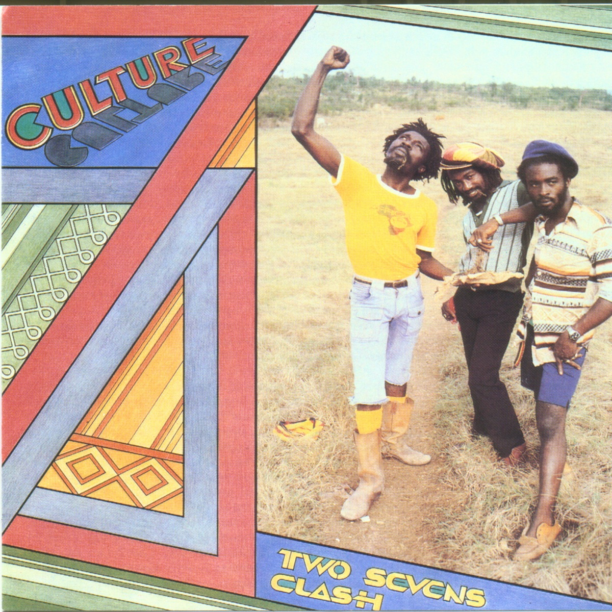

Twee dagen later
Op 3 december 1976 drongen zeven gewapende mannen het huis van Bob Marley binnen, Hope Road 56 in Kingston. Twee dagen later zou hij optreden op het Smile Jamaica-concert, in een land dat midden in een verkiezingscampagne zat. De mannen schoten Marley in borst en arm. Zijn vrouw Rita kreeg een kogel in het hoofd, en ook manager Don Taylor en Louis Griffiths raakten gewond. Niemand overleed. Wie de aanslag organiseerde, is nooit bevestigd: er bestaan alleen beweringen.
Marley stond op 5 december toch op het podium, in het National Heroes Park, ongeveer negentig minuten lang. Daarna vertrok hij naar Engeland. Wanneer hij precies in Londen aankwam en hoe lang zijn ballingschap duurde, melden de bronnen verschillend, dus die cijfers blijven hier buiten beeld. Vast staat dat hij er in 1977 een album afmaakte dat zijn grootste internationale doorbraak werd: Exodus.
Dat Marley het geweld overleefde en toch optrad, werd een deel van het verhaal rond de plaat. Een groot deel van wat hij daarna maakte, speelde zich af op afstand van Jamaica, in de studio's van Island in Londen, en niet in Kingston. Het album heeft daardoor twee werkplekken: Harry J Studio in Kingston en Island in Londen, en de plaat klinkt ook zo: Jamaicaanse ritmes, afgewerkt in een Britse studio.

Exodus, de titelsong van de plaat, een lang en hypnotisch stuk waarin de bas steeds vooruit blijft duwen.
Lagos, 18 februari
Terwijl Marley in Londen werkte, kwam in Nigeria een ander conflict tot uitbarsting. Fela Kuti woonde en werkte in Lagos in de Kalakuta Republic, zijn eigen compound waar ook zijn band thuis was. Op 18 februari 1977 viel het leger de compound aan. Het ging om ongeveer duizend soldaten. Fela's moeder, Funmilayo Ransome-Kuti, werd uit een raam gegooid en overleed later. De compound brandde af. In 2012 werd hij herbouwd als museum. Fela trouwde in 1978 met 27 vrouwen, een jaar na de raid.
Het nummer Zombie, waarin Fela soldaten aanvalt, was in 1976 in Nigeria verschenen en kwam in 1977 in het Verenigd Koninkrijk uit. Dat de aanval op Kalakuta met dat nummer te maken heeft, wordt algemeen aangenomen. Het blijft een interpretatie, geen bewezen oorzaak. Fela schreef naar aanleiding van de aanval ook Coffin for Head of State en Unknown Soldier. De plaat die vóór de raid verscheen, kreeg door die gebeurtenis een extra lading.

Zombie, het scherpste nummer van Fela Kuti & Africa 70, met een blazerspatroon dat als een legerexercitie klinkt.
Reggae in een punkclub
Op 1 januari 1977 opende in Covent Garden The Roxy, de eerste club in Londen waar live punk te horen was. The Clash verzorgden het openingsoptreden. Don Letts draaide er als dj dub en reggae, en filmde op Super 8 beelden die in 1978 in The Punk Rock Movie terechtkwamen. De eerste reeks punkavonden liep tot april, ruwweg honderd avonden lang.
The Clash namen reggae serieus. Op hun debuutalbum van april 1977 staat Police and Thieves, een nummer van Junior Murvin. Murvin schreef het met Lee ‘Scratch’ Perry en nam het in mei 1976 op in Perry's studio Black Ark in Kingston. In Engeland werd het datzelfde jaar een lied dat bij de rellen op de Notting Hill Carnival hoorde. Perry was in 1977 in Londen om voor Marley te werken, en The Clash vroegen hem hun single Complete Control te produceren. Die kwam in 1977 uit, haalde nummer 28 in het Verenigd Koninkrijk en werd opgenomen in Sarm East Studios in Whitechapel.
Black Ark bouwde Perry in 1973 in zijn achtertuin. Hij werkte er met Marley en de Wailers, Junior Murvin, de Heptones, de Congos en Max Romeo. In 1976 en 1977 nam hij er Heart of the Congos op. Van de oorspronkelijke Jamaicaanse persing zouden naar verluidt maar enkele honderden exemplaren zijn gemaakt; pas in 1980 volgde een heruitgave. Aan het eind van de jaren zeventig raakte de studio in verval, en later brandde ze af.
Ook Burning Spear, de artiestennaam van Winston Rodney, bracht in 1977 een album uit: Dry & Heavy, zelf geproduceerd en via Island uitgebracht. Zijn eerdere werk had hij al langer in Jamaica opgebouwd. Marley raadde hem in 1969 aan zich te melden bij Studio One van Coxsone Dodd. In 1977 stond hij zo naast Marley, Culture en de Congos in de Jamaicaanse reggae die Engeland binnenkwam. Zijn album Marcus Garvey uit 1975, waarvan de Island-versie bij zanger en fans slecht viel omdat de mix was aangepast, hoort bij het jaar daarvoor.

Police and Thieves, eerst in 1976 door Junior Murvin en een jaar later door The Clash: één song, twee werelden.
Exodus verschijnt
Exodus kwam op 3 juni 1977 uit bij Island Records en is Marleys negende studioalbum. De opnamen liepen in 1976 en van januari tot en met april 1977, deels in Harry J Studio in Kingston en deels in de studio's van Island in Londen. In het voorjaar woonde Marley met de Wailers aan Oakley Street 42 in Chelsea, waar nu een blauwe plaquette van English Heritage hangt.
 Foto: Albumhoes · afbeelding van Apple Music, getoond als citaat bij de bespreking
Foto: Albumhoes · afbeelding van Apple Music, getoond als citaat bij de besprekingHet album heeft tien nummers: Natural Mystic, So Much Things to Say, Guiltiness, The Heathen, Exodus, Jamming, Waiting in Vain, Turn Your Lights Down Low, Three Little Birds en One Love/People Get Ready. Junior Marvin speelt gitaar, Aston ‘Family Man’ Barrett bas, Carlton Barrett drums, Tyrone Downie keyboards en Alvin ‘Seeco’ Patterson percussie. Rita Marley, Marcia Griffiths en Judy Mowatt zingen als I-Threes. De titelsong is volgens de gangbare lezing geschreven naar aanleiding van de Jamaicaanse campagne van 1976, waarin premier Michael Manley een slogan gebruikte over waar het land naartoe ging.
Het album bleef 56 weken achter elkaar in de Britse lijst en piekte op nummer 8. In de Billboard 200 kwam het tot nummer 20. De single Exodus werd nummer 1 in Jamaica en haalde nummer 14 in het Verenigd Koninkrijk.
De Exodus Tour begon op 10 mei 1977 in het Pavillon de Paris. Op 13 mei stond Marley in de Houtrust Hallen in Den Haag. Vlak voor de tour liep hij tijdens een voetbalpotje met Franse journalisten een ernstige teenblessure op. In de eerste dagen van juni speelde hij in het Rainbow Theatre in Londen, waarna de tour werd afgebroken. De Londense concerten zijn opgenomen en werden pas op 12 juni 2020 officieel uitgebracht, als stream en download.
Zeven juli, en daarna
Culture, het trio van Joseph Hill, bracht in 1977 het debuutalbum Two Sevens Clash uit bij Joe Gibbs. Het was in 1976 opgenomen in Kingston, met Gibbs als producer. De titel verwijst naar 7 juli 1977, oftewel 7/7/77.

Foto: Albumhoes · afbeelding van Apple Music, getoond als citaat bij de besprekingIn 1977 nam Marley met Lee Perry als producer Punky Reggae Party op. Het kwam in 1977 uit als Jamaicaanse 12-inch en werd in andere landen de b-kant van Jamming. Het stond niet op Exodus, maar pas op de Deluxe Edition van 2001. In de tekst noemt Marley onder anderen de Damned, de Jam en The Clash. Hij schreef het als positieve reactie op de Clash-versie van Police and Thieves.
Jamming, de vrolijkste song van Exodus, met een refrein dat meteen blijft hangen.

Punky Reggae Party, de b-kant van Jamming en geproduceerd door Lee Perry.

Two Sevens Clash, de titelsong van Culture, een bezwerende roots-reggaeplaat.
Later in het jaar kwam uit Amerika een heel ander soort protest. Op 28 november 1977 verscheen bij Casablanca Funkentelechy Vs. the Placebo Syndrome van Parliament, geproduceerd door George Clinton. Het is een conceptalbum tegen het Placebo Syndrome, dat voor consumentisme en disco staat. Bij de lp zaten een poster van Sir Nose D'Voidoffunk en een stripboekje van Overton Loyd. Flash Light, met de synthesizerbas van Bernie Worrell, werd nummer 1 in de Billboard R&B-lijst. Het album haalde nummer 13 in de Billboard 200 en werd platina.

Flash Light, de grootste hit van Parliament, met Bernie Worrell op synthesizerbas.
En in Nederland
In Nederland lag reggae in 1977 ver van de hitlijsten. In de Top 40 van 30 april, week 18, stond Pussycat met My Broken Souvenirs op één, David Bowie met Sound and Vision op vier en Hotel California van de Eagles als nieuwe binnenkomer op 21. Marley kwam in die lijst niet voor.
Wel begon er dat jaar een punkscene. De Sex Pistols speelden op 6 januari in Paradiso in Amsterdam, een optreden dat als startpunt van punk in Nederland geldt. De Damned stonden er op 1 mei, Ramones en Talking Heads speelden op 11 mei in de Rasa in Utrecht, en Blondie kwam op 19 november naar Paradiso. Wally van Middendorp van The Tits richtte in 1977 het label Plurex op, met als eerste uitgave een single van The Tits zelf.
Een heel andere vernieuwing kwam uit de Achterhoek. Normaal, met zanger Bennie Jolink, zong in het Achterhoeks. In 1977 verscheen hun debuutalbum Oerend Hard. De single met dezelfde titel stond op 30 april voor het eerst in de Top 40, meteen op nummer 19, en na elf weken nog op 37. Herman Brood & His Wild Romance, opgericht in 1976, brachten in 1977 hun debuutalbum Street uit. De doorbraak met Saturday Night volgde pas in 1978.

Oerend Hard, de single waarmee Normaal in 1977 de Top 40 binnenkwam.
Wat deze platen delen, is dat ze allemaal ver van het midden van de pop vandaan kwamen. Marley maakte zijn album in Londen na een aanslag in Kingston, Fela speelde onder een regime dat zijn huis in brand stak, de Clash leenden een Jamaicaanse song, en in Nederland zong een band uit de Achterhoek in de eigen streektaal. In 1977 bleek dat een stem van de rand van het beeld soms het verst kwam.